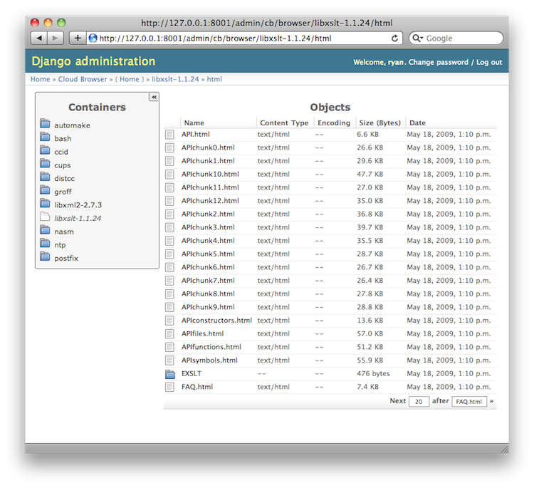
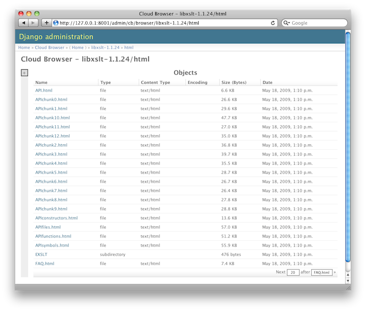

Here are a few different deployment shots of Cloud Browser in a Django application. The basic view style and layout is likely to change in the future when development turns to CSS/JS/HTML enhancements. In the meantime, all styles are customizable by overriding Cloud Browser CSS classes.
This is a basic installation, with a view of a subdirectory with a paged set of files:

This is the same view and set of containers and files with Django admin integration for look and feel, and functionality.
For the admin deployment, the container list can be closed or open (using the +/- toggle in the upper right hand corner of the container element).
